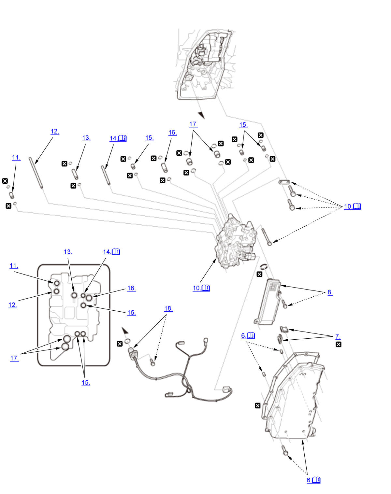

Valve Body Assembly Removal and Installation (L15B7/L15BA/L15BY (CVT)): Removal: Procedure
NOTE:
Numbered call-outs in figure pertain to list numbers in following procedure.

Courtesy of HONDA, U.S.A., INC. |
Detailed information, notes and precautions |
 |
Replace |
- Vehicle - Lift
- Engine Undercover Plate - Remove
- Engine - Warm Up
1. Start the engine, and warm it up to normal operating temperature (the radiator fan comes on twice). 2. Turn the engine off.
- Transmission Fluid - Drain
- Connector (Solenoid Wire Harness A) - Disconnect
- Transmission Fluid Pan - Remove
NOTE: The actual transmission fluid (HCF-2) capacity will vary from the specified capacity based on the length of time the transmission fluid pan is off the transmission. Avoid leaving the transmission fluid pan off for extend periods of time.
- Magnet - Remove
- Transmission Fluid Strainer - Remove
- Transmission Fluid Strainer - Check
1. Clean the inlet opening (A) of the transmission fluid strainer (B) thoroughly with compressed air. 2. Check that it is in good condition and that the inlet opening is not clogged.
3. Test the strainer by pouring clean transmission fluid through the inlet opening, and replace it if it is clogged or damaged.
- Valve Body Assembly - Remove
1. Remove the transmission fluid temperature sensor (A). 2. Disconnect the connectors (B).
3. Remove the guide plate (A). 4. Remove the valve body assembly (B) straightly.
NOTE:
- Do not remove the bolts with no ↓ marked on.
- Check that the valve body assembly is free of solenoid wire harness A.
- Be careful not to damage solenoid wire harness A.
- 10.9 x 26 mm Pipe - Remove
- 8 x 133.5 mm Pipe - Remove
- 12 x 56.7 mm Pipe - Remove
- Joint Pipe - Remove
NOTE: Be careful not to drop the filter (A).
- 10.9 x 18.5 mm Pipe - Remove
- 14.3 x 36.2 mm Pipe - Remove
- 18 x 18 mm Pipe - Remove
- Solenoid Wire Harness A - Remove